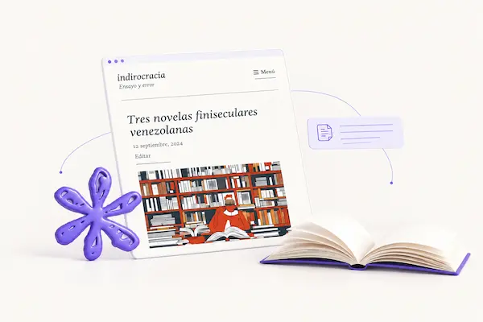
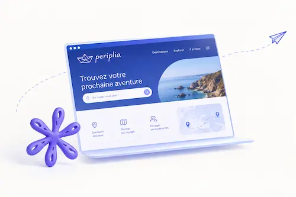
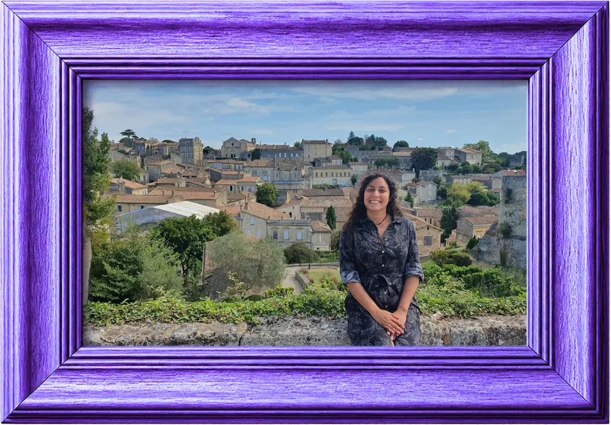

Observer, chercher,
douter, raconter.
Dix ans de métier : veille, rédaction à la minute, médias publics et privés.
De l’idée à la mise en ligne : contenus, communication et sites web

Un espace éditorial personnel autour de l’écriture et des récits. Une refonte en cours pour repenser la rencontre entre les textes, les images et les formes de narration sur le web.
↗
Un portfolio one-page (une seule page, promis), imaginé, écrit et codé à la main, sans framework.
↗
Une application full-stack pour organiser des voyages en groupe. Un projet de fin de formation qui m’a permis de relier interface, logique métier et gestion des données.
↗De formation journaliste, après la rédaction et la communication, je me suis formée au développement web pour comprendre ce qui se passe derrière l'écran. Aujourd'hui, je m'occupe de tout ce qui vit en ligne dans votre projet : texte, pages, calendrier, publication. En équipe ou en indépendante.
Bref, écrire clair, construire propre, rendre accessible.
L'espagnol est ma langue maternelle, je rédige et travaille aussi en français et j'ai une compréhension professionnelle de l'anglais.
Disponible en CDI, CDD ou en freelance
Du journalisme au développement web, plusieurs expériences, un même fil : relier les idées et les rendre accessibles.
Faites défiler pour découvrir la suite
Articles, UX writing, newsletters
Audit, mots-clés, GEO
CMS, calendrier, workflows
HTML, CSS, JS, responsive, No code, webmastering
Wireframing, prototypage
Agile/Scrum
Des contenus et interfaces utilisables par toutes et tous, sans barrières.
Sur ce site : navigation au clavier, focus visible, animations réduites sur demande.
Accompagner chacun·e dans l’usage des outils numériques, en expliquant simplement et en favorisant l’autonomie.
Dans mon travail : traduire le jargon technique en mots simples.
Parce qu'un site épanoui, c'est un visiteur qui reste.
Si vous avez une idée en tête même floue, elle peut être un bon début, alors, envoyez-moi un message.

Éditeur : Indira Ramírez Terán
Contact : indirramirez@gmail.com
Hébergement : GitHub Pages (GitHub Inc., 88 Colin P. Kelly Jr Street, San Francisco, CA 94107, États-Unis)
Données personnelles : ce site ne collecte aucune donnée personnelle. Si vous m'écrivez par e-mail, votre adresse est utilisée uniquement pour vous répondre.
Cookies : Ce site n'utilise pas de cookies de suivi.
Stockage local : le bouton de mode sombre enregistre votre préférence d'affichage (clair ou sombre) dans le stockage local de votre navigateur. Cette information reste sur votre appareil, n'est jamais transmise et ne sert à aucun suivi.